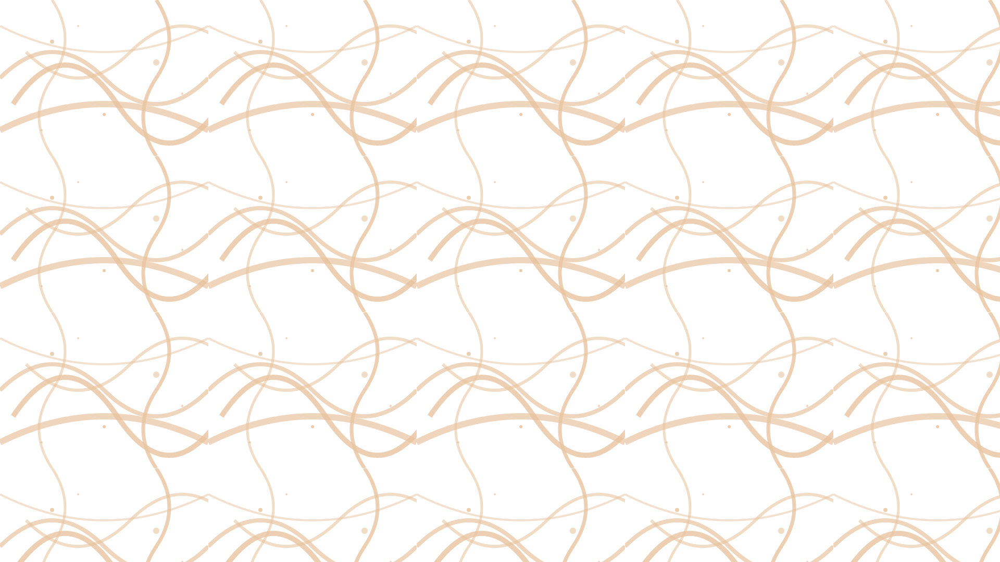

60+
regional launches crafted in the last 24 months.


Ocean-blue calm · Tanzania's most awarded branding agency
Kajnaja Brand blends anthropological insight with couture craft to deliver white-glove identities for leading Tanzanian luxury, hospitality, and innovation houses. Each rollout is curated, immersive, and relentlessly consistent.
regional launches crafted in the last 24 months.
average timeline from immersion to market entry.
clients reinvest in year-two retainers.

Home · Intro/About
We orchestrate white and ocean-blue systems that feel like air: present, essential, never loud. From Dar es Salaam to Zanzibar, we choreograph every touchpoint — interior scents, sonic cues, uniforms, digital platforms, and earned media playbooks.
Trusted by visionary founders

What Clients Say
Kajnaja transformed our vision into a brand that resonates deeply with our audience. Their attention to detail and cultural insight is unmatched in East Africa.

John Mwangi
CEO, Serengeti Reserve
Working with Kajnaja felt like having an in-house creative team that truly understood our heritage and aspirations. The result exceeded every expectation.

Sarah Amani
Founder, Zanzibar Tide Club
The level of craft and strategic thinking Kajnaja brought to our rebrand was extraordinary. They don't just design—they architect experiences.

David Kimani
Director, Kilimanjaro Aerie
From strategy to execution, Kajnaja delivered a brand identity that captures our essence perfectly. Their process is as refined as their output.

Grace Nyamweru
CMO, Swahili Tech Week
Studios
Immersive ethnography, positioning frameworks, and naming architectures tailored for East African founders.
Discover the lab →Motion, print, sonic, and spatial systems crafted with couture precision for physical and digital journeys.
See the atelier →Product design and content ecosystems that extend the brand’s breath online with graceful performance.
Meet the studio →Call to Action